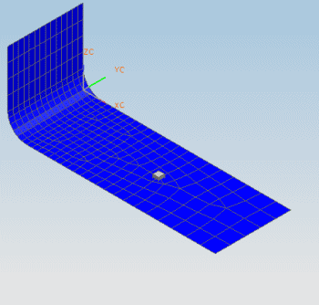

NX Response Simulation is an Advanced Simulation solution process for use with NX Nastran. It allows you to evaluate the dynamic responses of a structural model subjected to various loading conditions. The software calculates these responses using modal approaches.
The Response Simulation tutorial focuses on evaluation of the dynamic displacements and stresses in a bracket used to support an electronics module in an engine compartment. It is divided into two activities:
Response Simulation – FE model setup: You prepare the simulation files and define the boundary conditions and solution options necessary for performing a response simulation. You then solve the model and examine the normal modes.
Response Simulation – analysis events: You perform three response simulations, including transmissibility, transient analysis, and random analysis.
For detailed information about the procedures and concepts discussed in this tutorial, see the Response Simulation section in the Advanced Simulation online help.
Launch the Response Simulation – FE Model Setup activity.